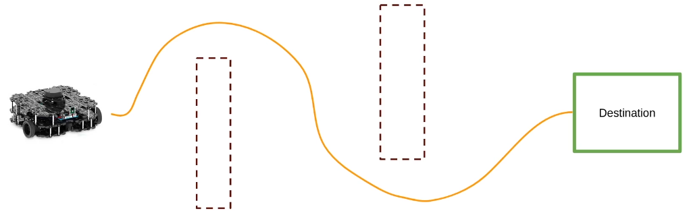
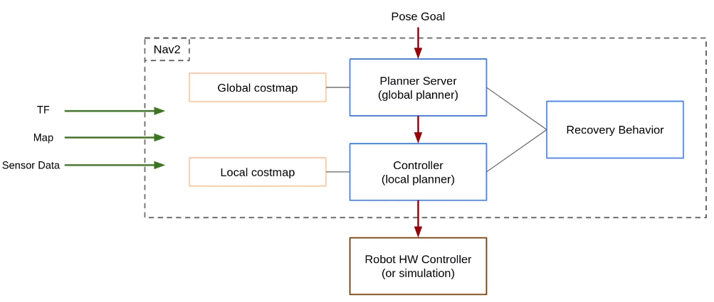
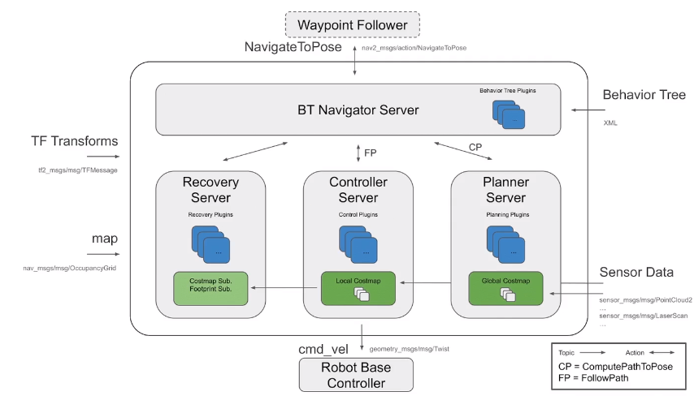
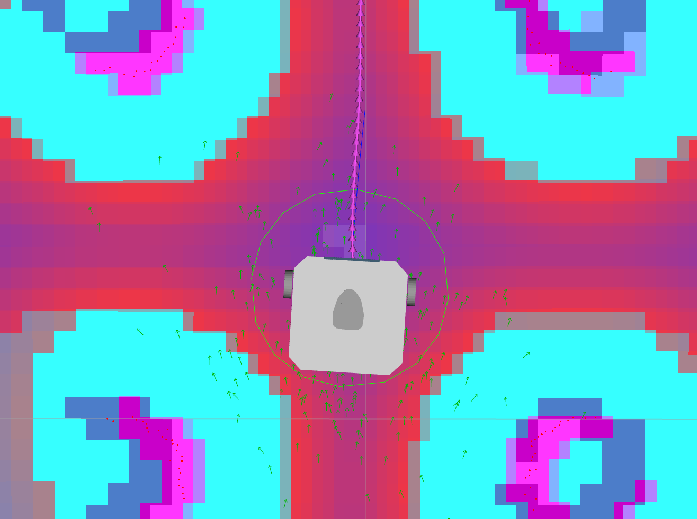
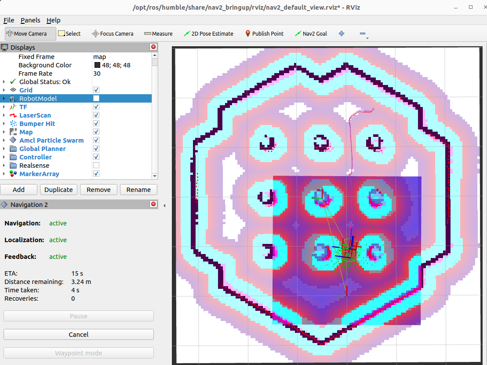
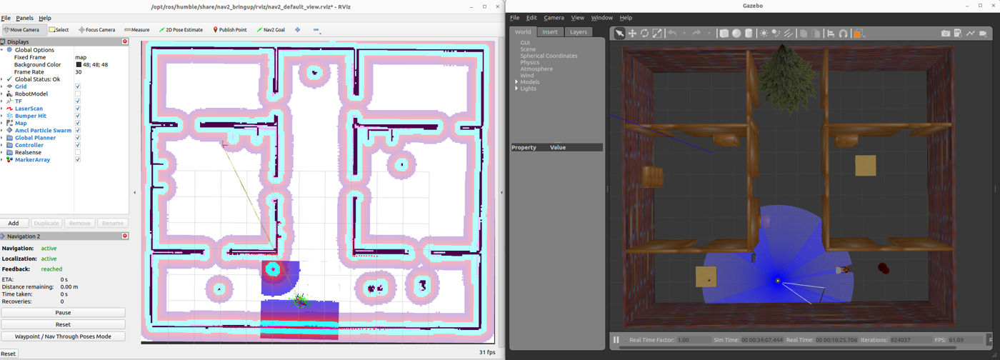
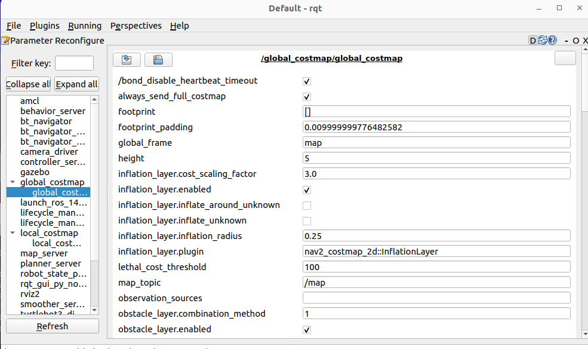

ros2 action.NavigateToPose| Time | Activity | Type |
|---|---|---|
| 0:00–0:10 | Warm-up | Check |
| 0:10–0:35 | Actions; Nav2 blocks with the book's figures; costmap simulator on the projector | Teach |
| 0:35–0:55 | Lab 1: actions with turtlesim | Do |
| 0:55–1:40 | Lab 2: Nav2 bringup, initial pose, goals | Do |
| 1:40–1:50 | Break | |
| 1:50–2:05 | Lab 3: NavigateToPose from the terminal | Do |
| 2:05–2:45 | Lab 4: nav_mission.py | Do |
| 2:45–3:00 | Activity 13.2 demo (surprise obstacle) + exit ticket | Check |
Teaching tip. Connect actions to what students already know: "a service that takes a while, keeps you updated, and can be cancelled". Nav2 is the best real example they will ever see.
A service call to "drive to the door" would take 30 s. What is wrong with using a service?
Which two files did you create in Lecture 12 that Nav2 needs today?
~/maps/limo_table.yaml + .pgm) and the parameters (~/ros2_ws/params/limo_nav2.yaml).| Topic 📻 | Service 🛎️ | Action 🎯 | |
|---|---|---|---|
| Pattern | stream | request → response | goal → feedback… → result |
| Duration | continuous | short | long (seconds to minutes) |
| Cancel? | – | no | yes |
| Example | /scan | /spawn | /navigate_to_pose, /turtle1/rotate_absolute |
It has a map, a "you are here" dot (AMCL, Lecture 12), a route planner, a driver who follows the route while dodging new obstacles, and "recalculating…" when stuck.




/cmd_vel 20 times per secondros2 run turtlesim turtlesim_node
ros2 action list
ros2 action info /turtle1/rotate_absolute
ros2 interface show turtlesim/action/RotateAbsolute# The desired heading in radians float32 theta ← goal --- # The angular displacement in radians to the starting position float32 delta ← result --- # The remaining rotation in radians float32 remaining ← feedback
ros2 action send_goal /turtle1/rotate_absolute turtlesim/action/RotateAbsolute "{theta: 1.57}" --feedbackGoal accepted with ID: 5c1f…
Feedback:
remaining: 1.53
Feedback:
remaining: 1.49
...
Result:
delta: -1.56
Goal finished with status: SUCCEEDEDNow send {theta: -3.0} and, while it turns, run ros2 run turtlesim turtle_teleop_key and press F: teleop cancels the goal. Compare with the action simulator above.
Start Gazebo fresh so the LIMO is at its start pose, which is (0, 0) on your map from Lecture 12.
ros2 launch limo_gazebosim limo_gazebo_diff.launch.pyros2 launch nav2_bringup bringup_launch.py use_sim_time:=True \
map:=$HOME/maps/limo_table.yaml params_file:=$HOME/ros2_ws/params/limo_nav2.yamlrviz2 -d $(ros2 pkg prefix nav2_bringup)/share/nav2_bringup/rviz/nav2_default_view.rviz --ros-args -p use_sim_time:=trueWait for "Managed nodes are active" in Terminal 2. bringup_launch.py starts everything from Lecture 12 (map_server + AMCL) plus the navigation servers.
Same as Lecture 12: click 2D Pose Estimate, click where the LIMO is and drag in the direction it faces (at the start: the map origin, along +x). The laser dots should sit on the black walls.
Click Nav2 Goal, then click and drag on a free (white) spot. Watch:


ros2 node list | grep -E "planner|controller|amcl|bt_navigator"
ros2 action list
ros2 topic echo /cmd_vel --field linear.xros2 action info /navigate_to_pose
ros2 action send_goal /navigate_to_pose nav2_msgs/action/NavigateToPose \
"{pose: {header: {frame_id: map}, pose: {position: {x: 0.8, y: 0.0, z: 0.0}, orientation: {w: 1.0}}}}" --feedbackThe feedback includes distance_remaining and navigation_time; the result arrives when the robot is there. Press Ctrl+C half-way to cancel the goal: the robot stops.
#!/usr/bin/env python3
import math
import rclpy
from geometry_msgs.msg import PoseStamped
from nav2_simple_commander.robot_navigator import BasicNavigator, TaskResult
def make_pose(navigator, x, y, yaw):
"""A goal on the map: position in metres, heading in radians."""
pose = PoseStamped()
pose.header.frame_id = "map"
pose.header.stamp = navigator.get_clock().now().to_msg()
pose.pose.position.x = x
pose.pose.position.y = y
pose.pose.orientation.z = math.sin(yaw / 2.0) # yaw -> quaternion (reverse of Lecture 8)
pose.pose.orientation.w = math.cos(yaw / 2.0)
return pose
def main():
rclpy.init()
navigator = BasicNavigator()
# 1. tell AMCL where we start (same as "2D Pose Estimate")
navigator.setInitialPose(make_pose(navigator, 0.0, 0.0, 0.0))
navigator.waitUntilNav2Active()
# 2. the mission: a square patrol (map coordinates, metres)
waypoints = [
make_pose(navigator, 0.8, 0.0, math.pi / 2),
make_pose(navigator, 0.8, 0.8, math.pi),
make_pose(navigator, 0.0, 0.8, -math.pi / 2),
make_pose(navigator, 0.0, 0.0, 0.0),
]
navigator.followWaypoints(waypoints) # an action goal under the hood
# 3. wait, printing the action feedback
while not navigator.isTaskComplete():
feedback = navigator.getFeedback()
if feedback:
navigator.get_logger().info(
f"Heading to waypoint {feedback.current_waypoint + 1}/{len(waypoints)}",
throttle_duration_sec=2.0)
# 4. the action result
result = navigator.getResult()
if result == TaskResult.SUCCEEDED:
navigator.get_logger().info("Mission complete! 🎉")
elif result == TaskResult.CANCELED:
navigator.get_logger().warn("Mission was cancelled")
else:
navigator.get_logger().error("Mission failed")
rclpy.shutdown()
if __name__ == "__main__":
main()# limo_lab/package.xml: <depend>nav2_simple_commander</depend>
# limo_lab/setup.py: "nav_mission = limo_lab.nav_mission:main",
cd ~/ros2_ws && colcon build --packages-select limo_lab --symlink-install && source ~/.bashrc
ros2 run limo_lab nav_mission --ros-args -p use_sim_time:=true[INFO] [basic_navigator]: Nav2 is ready for use! [INFO] [basic_navigator]: Heading to waypoint 1/4 ... [INFO] [basic_navigator]: Mission complete! 🎉
Map (0, 0) is where you started SLAM; +x is the direction the LIMO faced then. If a waypoint is inside an obstacle on your map, Nav2 skips it. Change the numbers to fit your map.
Change nav_mission.py so the robot patrols its square 3 times, then returns to (0, 0) and logs how long the whole patrol took (in simulated seconds, using navigator.get_clock().now()).
navigator.followWaypoints(waypoints * 3). Save the start time before, subtract after, and use .nanoseconds / 1e9.Send a goal across the table. While the LIMO drives, drop a box on its path in Gazebo. Watch the local costmap in RViz. What happens to the path? The box is not on your saved map, so which part of Nav2 noticed it, and using which sensor?
/scan data. The planner replans around it and the controller follows the new path. If the way is completely blocked, the behaviour tree runs recoveries (spin, back up, wait) before reporting the action as FAILED.In limo_nav2.yaml, find max_vel_x in the controller section and max_velocity in velocity_smoother. Increase them carefully (for example 0.26 → 0.4), restart Nav2 and time your patrol. Then increase inflation_radius to 0.4. Where does the robot now refuse to go? Try the same change in the costmap simulator first.

What does an action have that a service doesn't?
Which part of Nav2 turns the path into velocity commands?
Your goal is rejected: "Failed to create plan". Most likely cause?
A box appears that is not on the map. How does Nav2 avoid it?
Which action does RViz's "Nav2 Goal" button call?
| You see… | Why | Fix |
|---|---|---|
| RViz: no map / "Frame [map] does not exist" | map_server not running, or no initial pose yet. | Check Terminal 2 for errors; set 2D Pose Estimate. |
| Goal rejected / "Failed to create plan" | Goal inside inflated space or unknown area. | Click on clear white space; reduce inflation_radius. |
| Robot spins in place, never moves | Wrong initial pose, so the laser doesn't match the map. | Redo 2D Pose Estimate carefully (position and direction). |
| "Timed out waiting for transform" | Sim time mismatch. | Every node and RViz needs use_sim_time:=true. |
| nav_mission hangs at "waiting for Nav2" | Nav2 not started, or not active yet. | Start bringup_launch.py first; wait for "Managed nodes are active". |
| send_goal: "Action server not available" | Wrong action name, or Nav2 not up. | ros2 action list |
Topic, service or action? (a) "go to the charging dock" (b) "what is 3 + 4?" (c) the camera image.
What is a costmap's inflation layer for?
ros2 bag record /odom /cmd_vel /plan -o patrol.limo_lab package on a USB stick or GitHub next week: it runs on the real LIMO.